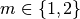
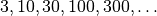
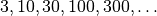
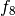

COCO: The Experimental Procedure¶
See also: ArXiv e-prints, arXiv:1603.08776, 2016.We present a budget-free experimental setup and procedure for benchmarking numerical optimization algorithms in a black-box scenario. This procedure can be applied with the COCO benchmarking platform. We describe initialization of and input to the algorithm and touch upon the relevance of termination and restarts. We finally reconsider parameter tuning and the concept of recommendations for benchmarking with COCO.
Introduction¶
Based on [HAN2009] and [HAN2010], we describe a comparatively simple experimental set-up for black-box optimization benchmarking. We recommend to use this procedure within the COCO platform [HAN2016co]. [1]
Our central measure of performance, to which the experimental procedure is
adapted, is the number of calls to the objective function to reach a
certain solution quality (function value or  -value or indicator
value), also denoted as runtime.
-value or indicator
value), also denoted as runtime.
Terminology¶
- function
- We talk about an objective function as a parametrized mapping
with scalable input space, that is,
is not (yet) determined, and usually .
Functions are parametrized such that different instances of the
“same” function are available, e.g. translated or shifted versions.
- problem
- We talk about a problem,
coco_problem_t, as a specific function instance on which the optimization algorithm is run. Specifically, a problem can be described as the triple(dimension, function, instance). A problem can be evaluated and returns an-value or -vector.
In the context of performance
assessment, a target - or indicator-value
is attached to each problem. That is, a target value is added to the
above triple to define a single problem in this case. - runtime
- We define runtime, or run-length [HOO1998] as the number of evaluations conducted on a given problem, also referred to as number of function evaluations. Our central performance measure is the runtime until a given target value is hit [HAN2016perf].
- suite
- A test- or benchmark-suite is a collection of problems, typically between twenty and a hundred, where the number of objectives is fixed.
| [1] | The COCO platform provides several (single and bi-objective) test suites with a collection of black-box optimization problems of different dimensions to be minimized. COCO automatically collects the relevant data to display the performance results after a post-processing is applied. |
Conducting the Experiment¶
The optimization algorithm to be benchmarked is run on each problem of the given test suite once. On each problem, the very same algorithm with the same parameter setting, the same initialzation procedure, the same budget, the same termination and/or restart criteria etc. is used. There is no prescribed minimal or maximal allowed budget, the benchmarking approach is budget-free. The longer the experiment, the more data are available to assess the performance accurately. See also Section Budget, Termination Criteria, and Restarts.
Initialization and Input to the Algorithm¶
An algorithm can use the following input information from each problem. At any time:
- Input and output dimensions
as a defining interface to the problem, specifically:
- The search space (input) dimension via
coco_problem_get_dimension, - The number of objectives via
coco_problem_get_number_of_objectives, which is the “output” dimension ofcoco_evaluate_function. All functions of a single benchmark suite have the same number of objectives, currently either one or two. - The number of constraints via
coco_problem_get_number_of_constraints, which is the “output” dimension ofcoco_evaluate_constraint. All problems of a single benchmark suite have either no constraints, or one or more constraints.
- The search space (input) dimension via
- Search domain of interest
- defined from
coco_problem_get_largest_values_of_interestandcoco_problem_get_smallest_values_of_interest. The optimum (or each extremal solution of the Pareto set) lies within the search domain of interest. If the optimizer operates on a bounded domain only, the domain of interest can be interpreted as lower and upper bounds. - Feasible (initial) solution
- provided by
coco_problem_get_initial_solution.
The initial state of the optimization algorithm and its parameters shall only be based on these input values. The initial algorithm setting is considered as part of the algorithm and must therefore follow the same procedure for all problems of the suite. The problem identifier or the positioning of the problem in the suite or any (other) known characteristics of the problem are not allowed as input to the algorithm, see also Section Parameter Setting and Tuning of Algorithms.
During an optimization run, the following (new) information is available to the algorithm:
- The result, i.e. the -value(s), from evaluating the problem
at a given search point
via
coco_evaluate_function. - The result from evaluating the constraints of the problem at a
given search point via
coco_evaluate_constraint. - The result of
coco_problem_final_target_hit, which can be used to terminate a run conclusively without changing the performance assessment in any way. Currently, if the number of objectives , this function returns always zero.
The number of evaluations of the problem and/or constraints are the search costs, also referred to as runtime, and used for the performance assessment of the algorithm. [2]
| [2] | coco_problem_get_evaluations(const coco_problem_t * problem) is a
convenience function that returns the number of evaluations done on problem.
Because this information is available to the optimization algorithm anyway,
the convenience function might be used additionally. |
Budget, Termination Criteria, and Restarts¶
We consider the budget, termination criteria, and restarts to be part of the benchmarked algorithm. Algorithms with any budget of function evaluations are eligible, our benchmarking setup is budget-free. The choice of termination is a relevant part of the algorithm. On the one hand, allowing a larger number of function evaluations increases the chance to achieve better function values. On the other hand, a timely termination of a stagnating run can improve the performance, as these evaluations can be used more effectively. [3]
To exploit a large number of function evaluations effectively, we encourage to use independent restarts [4], in particular for algorithms which terminate naturally within a comparatively small budget. Independent restarts are a natural way to approach difficult optimization problems and do not change the central performance measure used in COCO (hence we call COCO budget-free), however, they improve the reliability, comparability [5], precision, and “visibility” of the measured results.
Moreover, any multistart procedure (which relies on an interim termination of the algorithm) is encouraged. Multistarts may not be independent as they can feature a parameter sweep (e.g., increasing population size [HAR1999] [AUG2005]), can be based on the outcome of the previous starts, or feature a systematic change of the initial conditions for the algorithm.
After a multistart procedure has been established, a recommended procedure is
to use a budget proportional to the dimension,  , and run
repeated experiments with increase , e.g. like
, which is a good compromise between
availability of the latest results and computational overhead.
, and run
repeated experiments with increase , e.g. like
, which is a good compromise between
availability of the latest results and computational overhead.
An algorithm can be conclusively terminated if
coco_problem_final_target_hit returns 1. [6] This saves CPU cycles without
affecting the performance assessment, because there is no target left to hit.
| [3] | In the single objective case care should be
taken to apply termination conditions that allow to hit the final target on
the most basic functions, like the sphere function  , that is on the
problems 0, 360, 720, 1080, 1440, and 1800 of the , that is on the
problems 0, 360, 720, 1080, 1440, and 1800 of the bbob suite. |
| [4] | The COCO platform provides example code implementing independent restarts. |
| [5] | Algorithms are only comparable up to the smallest budget given to any of them. |
| [6] | For the bbob-biobj suite this is however currently never the case. |
Parameter Setting and Tuning of Algorithms¶
Any tuning of algorithm parameters to the test suite should be described and the approximate overall number of tested parameter settings or algorithm variants and the approximate overall invested budget should be given.
The only recommended tuning procedure is the verification that termination conditions of the algorithm are suited to the given testbed and, in case, tuning of termination parameters. [7] Too early or too late termination can be identified and adjusted comparatively easy. This is also a useful prerequisite for restarts, see also above.
On all functions the very same parameter setting must be used (which might well depend on the dimensionality, see Section Initialization and Input to the Algorithm). That means, the a priori use of function-dependent parameter settings is prohibited (since 2012). The function ID or any function characteristics (like separability, multi-modality, ...) cannot be considered as input parameter to the algorithm.
On the other hand, benchmarking different parameter settings as “different algorithms” on the entire test suite is encouraged.
| [7] | In our experience, numerical optimization software frequently terminates too early by default, while evolutionary computation software often terminates too late by default. |
Recommendations¶
The performance assessment is based on a set of evaluation counts
associated with the -value or -vector of a solution.
By default, each evaluation count is associated with the respectively evaluated
solution and hence its -value.
In the single-objective case, the solution associated to the current (last)
evaluation can be changed by calling coco_recommend_solution, thereby
associating the -value of the recommended solution (instead of the
evaluated solution) with the current evaluation count.
A recommendation is best viewed as the currently best known approximation of the
optimum [8] delivered by the optimization algorithm, or as the currently most
desirable return value of the algorithm.
Recommendations allow the algorithm to explore solutions without affecting the performance assessment. For example, a surrogate-based algorithm can explore (i.e. evaluate) an arbitrarily bad solution, update the surrogate model and then recommend the (new) model optimizer. On non-noisy suites it is neither necessary nor advantageous to recommend the same solution repeatedly.
| [8] | In the noisy scenario, a small number of the most current solutions will be taken into account [HAN2016perf]. In the multi-objective scenario, the recommendation option is not available, because an archive of non-dominated solutions presumes that all solutions are evaluated. |
Time Complexity Experiment¶
In order to get a rough measurement of the time complexity of the algorithm, the wall-clock or CPU time should be measured when running the algorithm on the benchmark suite. The chosen setup should reflect a “realistic average scenario”. [9] The time divided by the number of function evaluations shall be presented separately for each dimension. The chosen setup, coding language, compiler and computational architecture for conducting these experiments should be given.
| [9] | The example experiment code provides the timing output measured over all
problems of a single dimension by default. It also can be used to make a record
of the same timing experiment with “pure random search”, which can serve as
additional base-line data. On the bbob test suite, also only the
first instance of the Rosenbrock function  had been used for this
experiment previously, that is, the suite indices 105, 465, 825, 1185, 1545,
1905. |
Acknowledgments
The authors would like to thank Raymond Ros, Steffen Finck, Marc Schoenauer, Petr Posik and Dejan Tušar for their many invaluable contributions to this work.
This work was support by the grant ANR-12-MONU-0009 (NumBBO) of the French National Research Agency.
References
| [AUG2005] | A. Auger and N. Hansen. A restart CMA evolution strategy with increasing population size. In Proceedings of the IEEE Congress on Evolutionary Computation (CEC 2005), pages 1769–1776. IEEE Press, 2005. |
| [HAN2016perf] | (1, 2) N. Hansen, A. Auger, D. Brockhoff, D. Tušar, T. Tušar. COCO: Performance Assessment. ArXiv e-prints, arXiv:1605.03560, 2016. |
| [HAN2009] | N. Hansen, A. Auger, S. Finck, and R. Ros. Real-Parameter Black-Box Optimization Benchmarking 2009: Experimental Setup, Inria Research Report RR-6828 http://hal.inria.fr/inria-00362649/en, 2009. |
| [HAN2010] | N. Hansen, A. Auger, S. Finck, and R. Ros. Real-Parameter Black-Box Optimization Benchmarking 2010: Experimental Setup, Inria Research Report RR-7215 http://hal.inria.fr/inria-00362649/en, 2010. |
| [HAN2016co] | N. Hansen, A. Auger, O. Mersmann, T. Tušar, D. Brockhoff. COCO: A Platform for Comparing Continuous Optimizers in a Black-Box Setting, ArXiv e-prints, arXiv:1603.08785, 2016. |
| [HAR1999] | G.R. Harik and F.G. Lobo. A parameter-less genetic algorithm. In Proceedings of the Genetic and Evolutionary Computation Conference (GECCO), volume 1, pages 258-265. ACM, 1999. |
| [HOO1998] | H.H. Hoos and T. Stützle. Evaluating Las Vegas algorithms: pitfalls and remedies. In Proceedings of the Fourteenth Conference on Uncertainty in Artificial Intelligence (UAI-98), pages 238-245, 1998. |